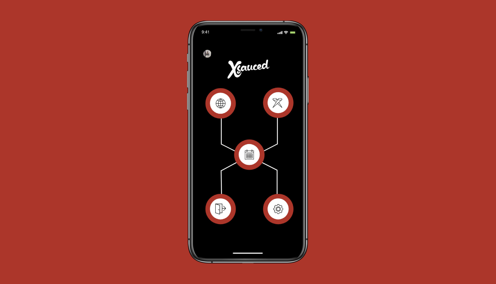
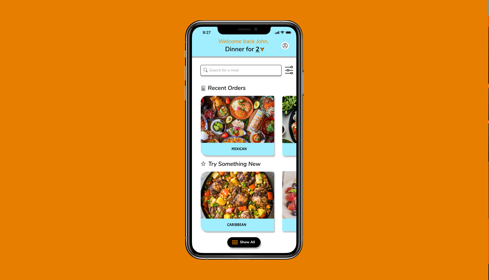

Intro
To understand and define who I am, you have to accept that I create, innovate, and research in all capacities. My passion for creative works has taken me from a young athlete, to diving into the digital world as both an application developer, and an UX/UI designer. If you look at my current projects page you can see some of my ideas that are currently being implemented. You can also check out my design porfolio here. I try to surround myself with some of the very best in their respected fields of business, art, fashion, and media.
When I first graduated college, I built homes for those in my community. I saw this a the most helpful yet artistic way to give back to my community while I continued my journey as a designer/developer.
Portfolio
Below are two original user flows and frame designs that were created by me. I have taken a slightly different approach to my portfolio by creating mock-ups of applications from a business perspective. Designing from this angle yields both great UX/UI and viable use cases.
 Resume
🎓 Education:
My college career was unique, having attended 4 different universities within 4 years. These transitions came as a result of me pursuing an opportunity to play professional baseball.
I started out at West Virginia University, as a Mountaineer, studying Business Administration. Year 2 took me to Georgia Highlands College in Cartersville, GA. Transferring to community college was a necessity in order to stay compliant with NCAA rules.
Even with the NCAA stipulation, my year at GHC served well for my personal development. Junior year I attended Mercer University in Macon, GA. While there, I studied Entrepreneurship at the Stetson School of Business.
My 4th year/final stop for Senior year was at Keiser University in West Palm Beach, FL. Keiser is where I graduated with a degree in both Marketing and Business Management on October 25th, 2020.
👨🏾💻 Work:
I supplied original UX/UI and graphic elements for "Xsauced". All of the screens I created were for the mobile application necessary for our business model.
During my last semester of college, I attended Wyncode Academy in the Wynwood District in Miami. This opened my eyes to the world of coding, digital design, and the impact of the internet on businesses. I graduated from their Full-Stack Web Development Program and will be forever grateful for what I have learned under their guidance.
Since then, I have been building my knowledge of both application development and design in hopes that I can be of service to businesses and individuals who are in need of innovation, rebranding, websites/apps, and of course UX/UI designs for mobile applications. Head over to my contact page to discuss a project you had in mind for me!
Click here to download a pdf of my resume.
Mission
The masses have been fasely led into thinking that group thought is a good idea. This amazes me becuase we produce our best work as people when the problem we are solving is personal. I have assumed the responsibility to continue to learn, and develop systems that challenge the norms of business logic. Developing websites like this one you are currently on mesh practicallity and creativity to show that it is individuals who have creative visions, not groups. Individual ideas allow room for tweaks, and changes. If everyone shares the same thoughts, then there is really no room for creative solutions.
In a world full of unecessary innovation, I only desire to create things of utility to better our lives.
Current Projects
I am currently working on 3 projects:
Xsauced Labs: The Xchange
Xsauced Labs is an innovation think tank that produces services and products that shift current perpectives. The Xchange is a revolutionary take on what is considered an asset.The focus for this application is sneakers and how they are cultural assets that can be indexed. We are building a marketplace designed for fractional ownership of cultural assets.
Waypoint
The second project I am working on is known as Waypoint. This idea came to me when I witnessed the issues that shipping companies ran into while trying to scale their businesses. Waypoint just removes the need for a brokerage by way of SASS. It is fundamental load board that only onboards shippers and carrier(drivers).
Nature.Nomad
Nature.Nomad is a play on words from the perspective of a coder. Nature being the class and Nomad being the method. A nomad is one with nature.
This application idea was inspired by my girlfriend who loves to hike. At its core, it is a trail map with common rewards and NFTs for those who frequent different state and national parks. I plan to utilize 3D mapping technologies in order validate elevations at summits in order to create unique NFTs to further drive blockchain adoption.